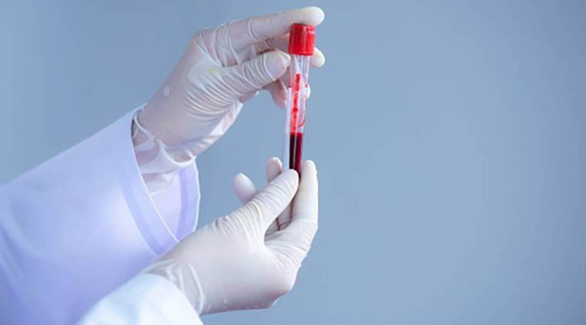

Welcome to Blood Donation Bank
Blood banking refers to the process of collecting, separating, and storing blood. The first U.S. blood bank was established in 1936. Today, blood banks collect blood and separate it into its various components so they can be used most effectively according to the needs of the patient. Red blood cells carry oxygen, platelets help the blood clot, and plasma has specific proteins that allow proper regulation of coagulation and healing. Although research has yielded drugs that help people's bone marrow produce new blood cells more rapidly, the body's response time can still take weeks, thus donated blood remains an important and more immediate life-saving resource.
Blood is the vital connection to having a healthy body, and according to the American Red Cross, nearly 5 million people receive blood transfusions each year. Thanks to years of research, much progress has been made towards making transfusions safer and more effective.